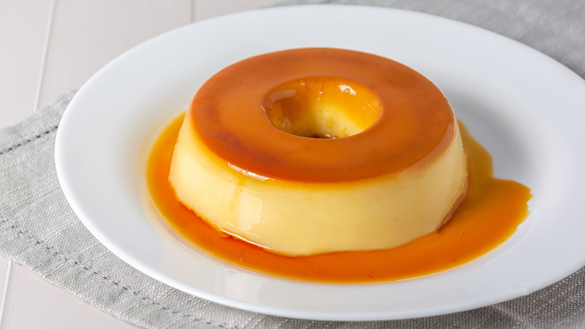

Pudim - Receita

Ingredientes (8 porções)
Como fazer:
Pudim
1 lata de leite condensado
1 lata de leite (medida da lata de leite condensado)
3 ovos inteiros
Calda
1 xícara (chá) de açúcar
1/2 xícara de água
Modo de preparo
Pudim:
1 - Primeiro, bata bem os ovos no liquidificador.
2 - Acrescente o leite condensado e o leite, e bata novamente.
Calda:
3 - Derreta o açúcar na panela até ficar moreno, acrescente a água e deixe engrossar.
4 - Coloque em uma forma redonda e despeje a massa do pudim por cima.
Preparo:
5 - Asse em forno médio por 45 minutos, com a assadeira redonda dentro de uma maior com água.
6 - Espete um garfo para ver se está bem assado.
7 - Deixe esfriar e desenforme.